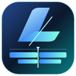

Importiere Videos und ziehe sie auf die Timeline.
Dein Projekt, fertig für die Welt.
Der Browser rendert in Echtzeit. Lass die Seite währenddessen geöffnet und sichtbar.
Framegenaue Schnittwerkzeuge